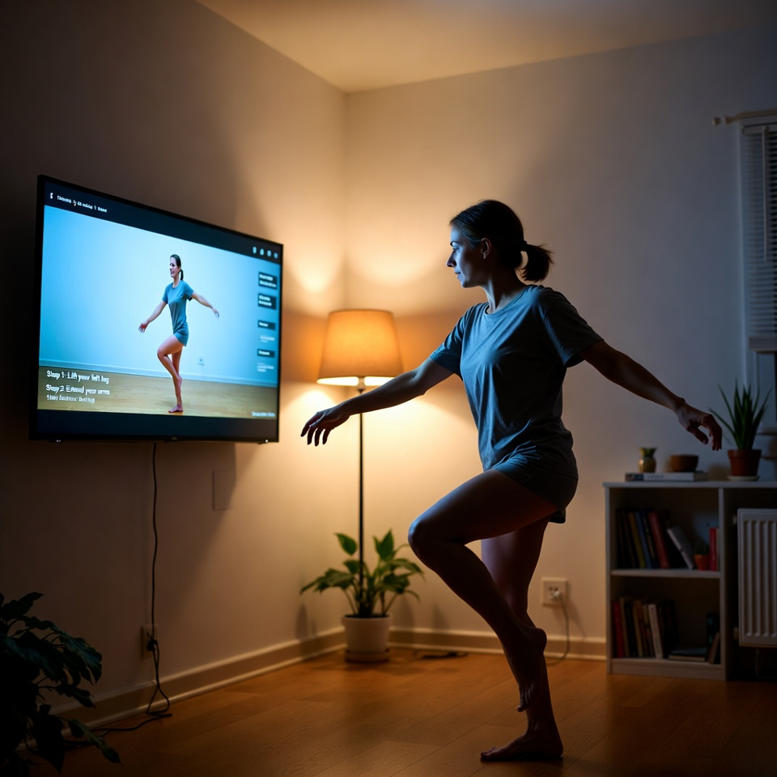

Meet Your Instructor
Erynn Joi, also known as Ebaby, is a professional dancer, choreographer, and movement coach. Smooth Moves is the only dance course taught by Erynn Joi—and the only place online where she teaches the mindset and movement she brings to stages, studios, and clubs around the world.
Her background
For over 25 years, Erynn has been a professional dancer, choreographer, and movement coach. Her gift is helping people who never called themselves “dancers” feel powerful, grounded, and confident in their own bodies.
That is the work she brings to Smooth Moves: club-ready grooves taught as simple, repeatable drills you can practice at home, with no experience needed.
How she teaches
Smooth Moves is confidence-first. Sessions are built to quiet the overthinking and replace it with grounded confidence that shows up the second you start moving. You learn timeless grooves and clean textures that look good at the club, on camera, and in everyday life—no cheesy routines.
You start simple, then add arms, textures, and footwork so you’re never lost, even if you’ve never taken a dance class. Lessons are filmed with you in mind: small spaces, real bodies, real life. You don’t need a studio—just a few feet of room to move. Pause, rewind, and repeat as many times as you want. Confidence comes from repetition and feeling your own body, not rushing through content.

Who this course is for
This course is specifically designed for people who feel stiff, awkward, or overthink every move. Beginner-friendly modules focus on groove, rhythm, and body awareness so you feel safe, expressive, and in control.
Train at home, then walk into any club already knowing what to do. As the library grows, you get new combos, drills, and guidance every 1–2 months—aimed at building real confidence, not just tricks.
Start moving with Erynn
One simple membership—$59.99/month—unlocks the full Smooth Moves library, with no tiers and no upsells. Join and learn from the only online course taught by Erynn Joi, world-class dancer.
Enroll now